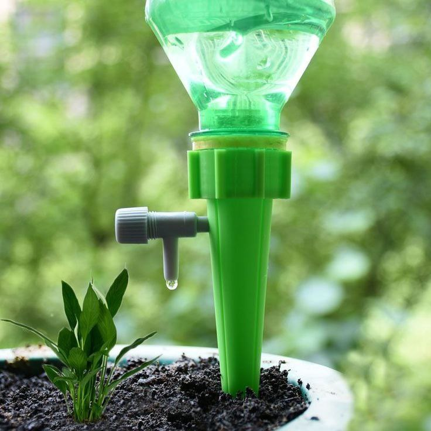
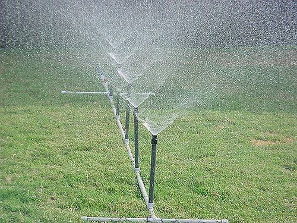
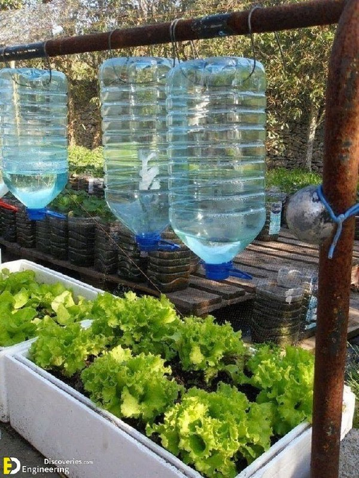

To prevent your plants from wilting in summer, they need plenty of water. But how much and how often should you be watering?
Below are some smart and helpful facts for watering your plants.
- Rule no. 1: Maintain good soil moisture levels
- Most plants depend on even moisture. However, slight drying out before watering promotes root growth of the plants.
- Rule no. 2: Water less often, but thoroughly
- In the flower bed, one to two watering sessions per week are usually sufficient: better to water less often but with plenty of water rather than a little water often.
- Water late in the evening or early in the morning
- When you water cooled soil in the evening or at night, less water evaporates than it would on hot soil during the day. And the plants can sufficiently supply themselves with water before the next day’s heat.
- Rule no. 4: Keep leaves dry to avoid diseases
- Wet leaves become diseased leaves. Leaves that are made wet in the sun develop slight burn marks (burning glass effect of the water droplets). Kept wet overnight, leaf-mould diseases may result.
- Rule no. 5: Ensure the water reaches the roots
- Suitable watering means that the water must sufficiently reach the roots. Too-low water quantities often only cover the upper soil. Adequate watering also means that crop plants are particularly dependent upon evenly moist soil in the time until their crops are ripe for harvesting.
- Rule no. 6: Apply gradually to allow water to fully penetrate the soil without run-off
- Water needs a moment to seep into the soil. Before precious water in the bed flows away unused, it’s better to water repeatedly in parts.
- Rule no. 7: Water evenly around the plant for a balanced well-developed root system
- Always watering at only one root point leads to one-sided root growth and thereby to poorer nutrient absorption in the soil. Therefore, always water around the plant and distribute in the entire irrigation area.
- Rule no. 8: Use water-saving irrigation methods e.g. drip irrigation
- Water as much as necessary and as little as possible. This is simplified with an automatic irrigation system with moisture sensor – in the bed, on the balcony and on the lawn.
- Rule no. 9: Avoid waterlogging
- Waterlogging suppresses the breathing air of the roots out of the soil – the root cells drown without oxygen.
- Rule no. 10: Use quality, clay-rich soil for better water retention
- Plant soil rich in clay minerals has better expanding properties and can therefore hold water in the soil better and in a more even way. In wet summers and in winter, ensure water drainage to prevent waterlogging.
These are some tools that will help you


